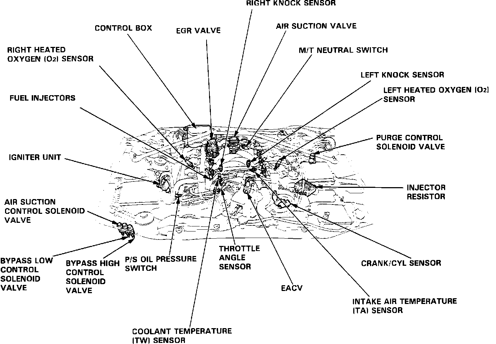
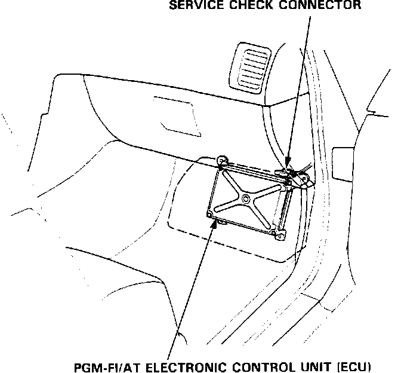
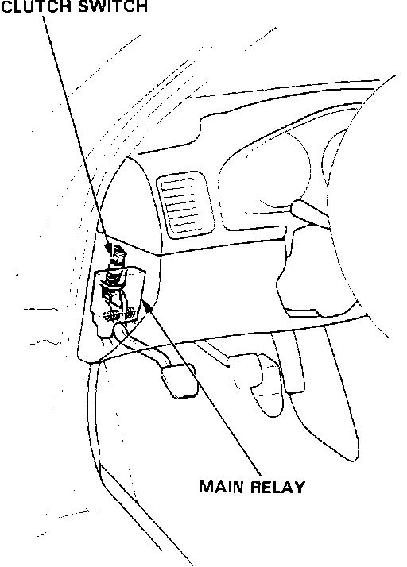
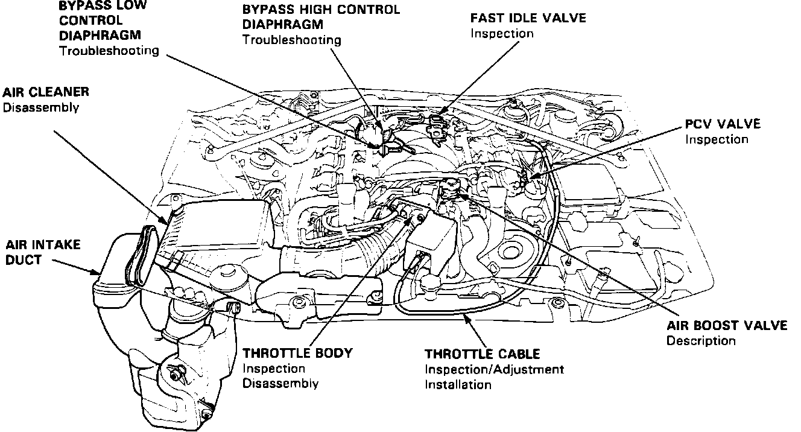

Powertrain Management: Locations
Component Locations:

Fig. 1
Component Locations:

Fig. 2
Component Locations:

Fig. 3
Component Locations:

Fig. 4
A/T SHIFT POSITION SWITCH
Mounted in the center console below the shift lever.
AIR SUCTION CONTROL SOLENOID
Mounted next to the air filter housing, front right engine compartment. Fig. 1
AIR TEMPERATURE (TA) SENSOR
Mounted in the intake manifold. Fig. 1
ATMOSPHERIC PRESSURE (PA) SENSOR
Mounted inside the ECU. Fig. 2
BYPASS CONTROL SOLENOID
Mounted next to the air filter housing, front right engine compartment. Fig. 1
CLUTCH SWITCH
Mounted on the clutch pedal under the dash. Fig. 3
CRANK/CYL SENSOR
Mounted to the left cylinder head, behind cam sprocket. Fig. 1
EGR LIFT SENSOR
Mounted to the EGR valve in the right rear corner of the intake manifold. Fig. 1
ELECTRONIC AIR CONTROL VALVE (EACV)
Mounted to the intake manifold. Fig 1
ELECTRONIC CONTROL UNIT
Mounted in the front passenger footwell under the carpet. Fig. 2
FUEL INJECTORS
Mounted on the intake manifold. Fig. 1
INJECTOR RESISTOR
Mounted under the engine compartment fuse/relay box. Fig. 1
IGNITER
Mounted to the right fender skirt near the strut tower. Fig 1
IGNITION TIMING ADJUSTER
Mounted in the vacuum control box in the rear of the engine compartment. Fig. 1
MAIN RELAY
Mounted under the dashboard near the fuse box. Fig. 3
MANIFOLD ABSOLUTE PRESSURE (MAP) SENSOR
Mounted in the vacuum control box in the rear of the engine compartment. Fig. 1
M/T NEUTRAL SWITCH
Mounted to the side of the transaxle.
OXYGEN SENSORS
One sensor mounted in each exhaust manifold. Fig. 1
POWER STEERING PRESSURE SWITCH
Threaded into the power steering pressure hose in the rear of the engine compartment. Fig. 1
RESONATOR CONTROL SOLENOID
Mounted in the vacuum control box in the rear of the engine compartment. Fig. 1
CRANK/CYLINDER SENSOR
Mounted to the front cylinder head. Fig. 1
THROTTLE ANGLE SENSOR
Mounted to the throttle body. Fig. 1
VEHICLE SPEED SENSOR
Mounted next to the engine oil filter.
WATER TEMPERATURE (TW) SENSOR
Threaded into the water passage crossover pipe front of engine. Fig. 1